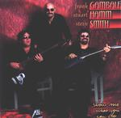

Home Artist links Label link

Gambale Hamm Smith - Show Me What You Can Do
| Artist: | Gambale Hamm Smith |
| Title: | Show Me What You Can Do |
| Label: | Tone Center catnr unknown |
| Length(s): | 58 minutes |
| Year(s) of release: | 1998 |
| Month of review: | [04/2002] |
Line up
Frank Gambale - guitars
Stu 'The Glue' Hamm - bass
Steve Smith - drums
Tracks
| 1) | Bad Intent | 7.03
|
| 2) | The Promise | 5.39
|
| 3) | Dangerous Curves | 6.39
|
| 4) | Beyond The Bridge | 6.32
|
| 5) | Sink | 4.33
|
| 6) | Wrong And Strong | 6.12
|
| 7) | Astral Traveler | 5.42
|
| 8) | Tanya's Touch | 5.28
|
| 9) | Lydia's Love Van | 9.43
|
Summary
Tone Center is known for sometimes sticking a bunch of artists in a studio, and just waiting to see what comes out of it. I don't know whether that's the method used for this album, but it wouldn't surprise me a bit if it were. The description of the creative process in the booklet seems close, to say the least. By the way, Frank Gambale in this same booklet describes the album as 'there's plenty of testosterone here - manly music played by manly men'. I guess there's a lot of testosterone in that statement as well.
The album starts off in an pretty melodic way still, quite to my liking, but already during this first track the guys start jamming, or whatever you'd call it, in one of those technically marvelous ways that doesn't particularly sound like music. Goody, do I love it when they do that. This album is a combination of the at least somewhat melodic stuff (for instance Tanya's Touch, there's some more testosterone for you) on the one side, and downright freakishness on the other (for instance Dangerous Curves and Lydia's Love Van).
The music
I'm not saying this is bad work. After all technically these guys are top notch, it's just that bit of composing that does leave something to be desired. This album is just another step further along from the likes of Bozzio Levin Stevens or Liquid Tension Experiment. Towards jazzrock oblivion, that is, at least from a progressive viewpoint. Anyway, it's a good thing I stayed active during this album, or all this meandering might have taken me into snoresville unawares.
Conclusion
© Roberto Lambooy